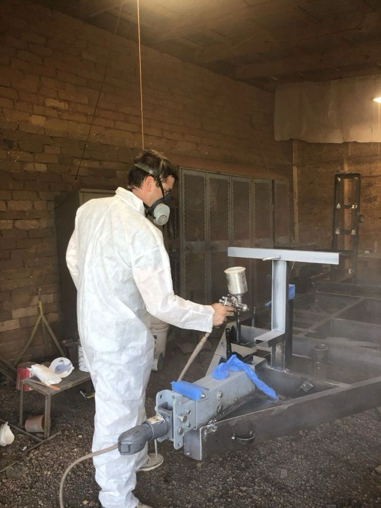
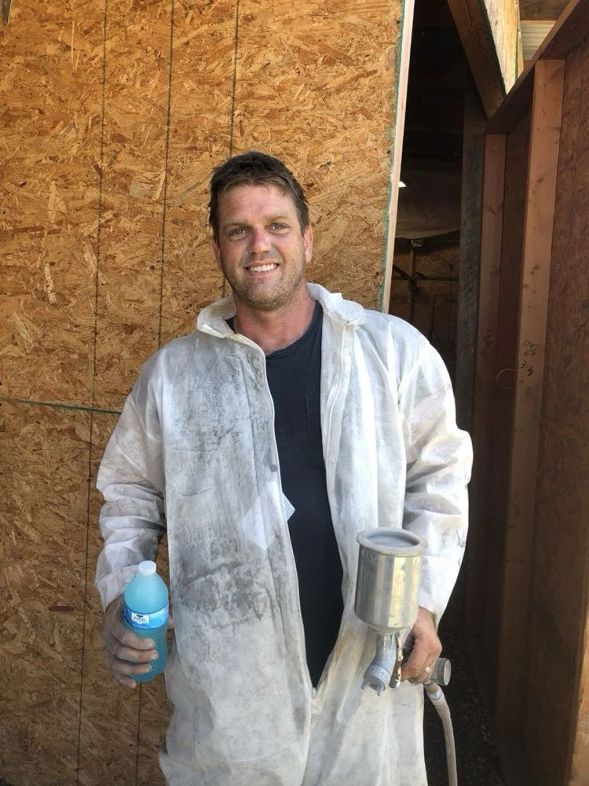
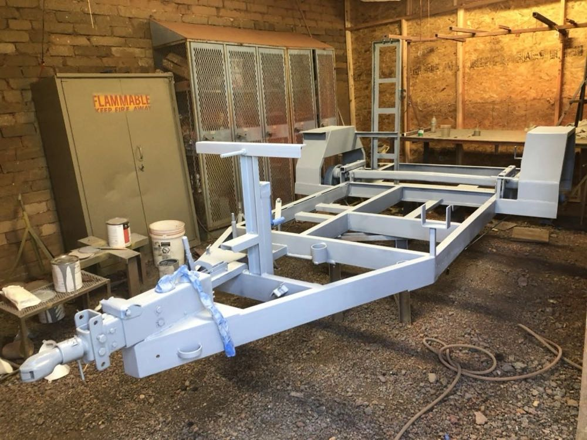
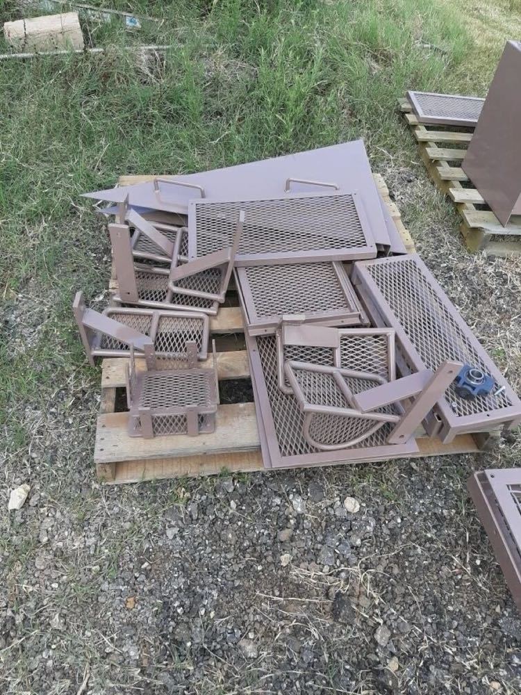
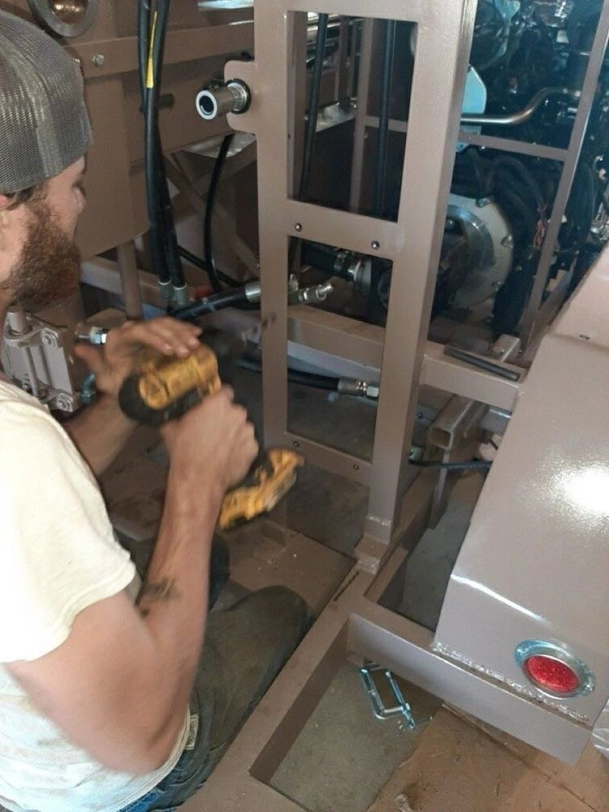
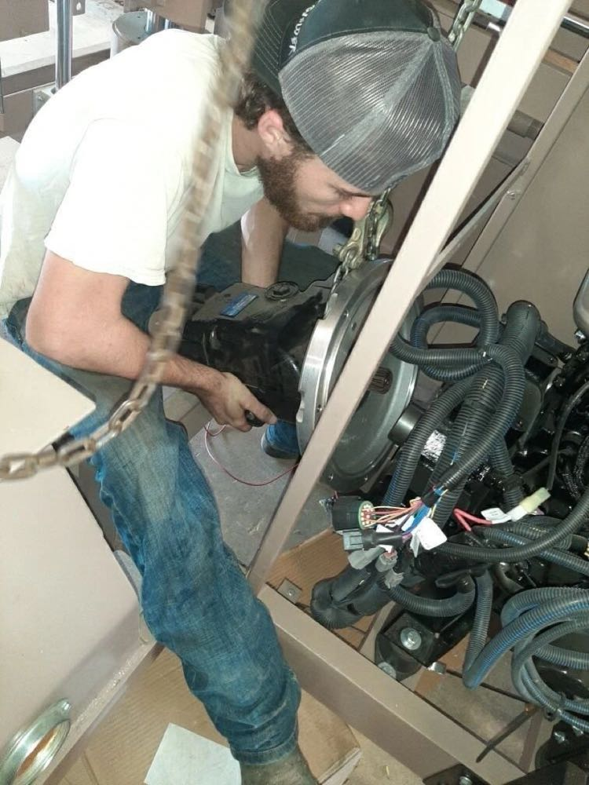
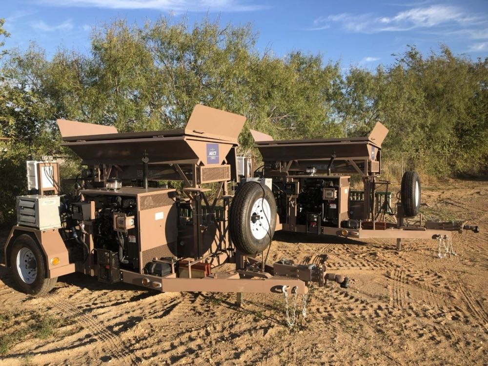
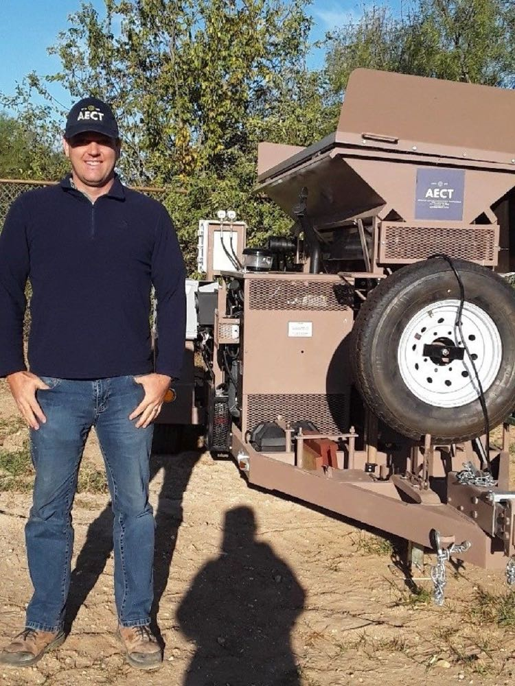
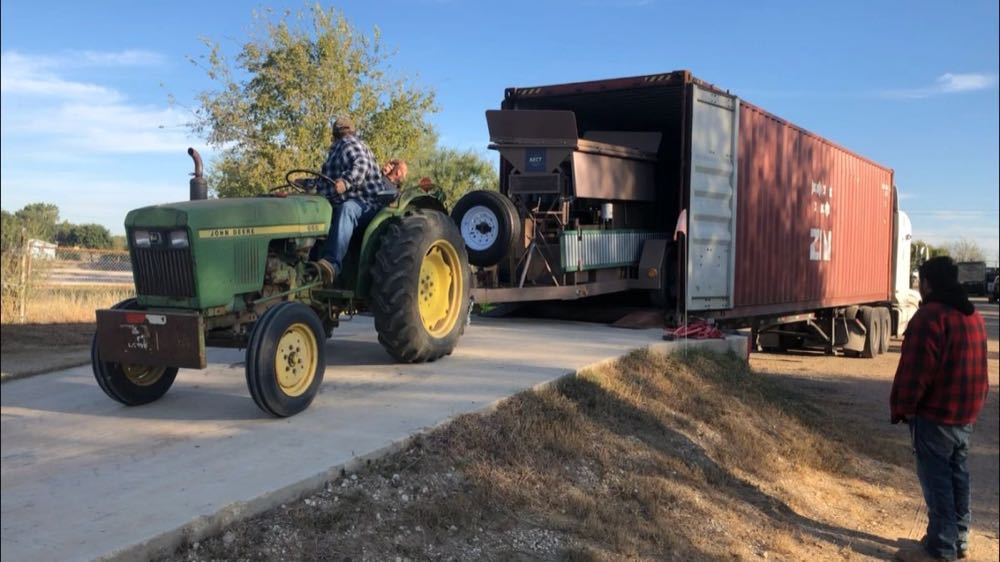

In May, I wrote a blog entry as we began construction on two brand new 3500s for our Hungarian customer. We faced many difficulties with these machines but soldiered on throughout the summer. And when it was over 100 degrees outside and the rest of the crew was busy fabricating parts, even yours truly had to get in the paint booth and keep the momentum going on production.



Because we've branched out into the realms of machine-leasing, block-selling, and CEB construction, many customers are surprised to learn that we don't only USE CEB machinery...we actually manufacture it. Most customers are even more surprised to learn that we build them from the ground up, starting with good ol' American raw steel. This includes welding/fabricating the trailer and all the other steel components of the machine, painting, and designing/installing the sophisticated hydraulic and automation systems. Our machines are built one at a time by hand. Every little component is carefully chosen based on the premise that these machines are going to be under a great deal of strain (compressing earthen material at close to 2,000 PSI up to 480 times per hour!) and that they are constantly exposed to a substance that is the very definition of abrasive...sand (in addition to rocks and clay). This refined level of craftsmanship is the secret to the strength and longevity of our AECT machines.



It's been a challenging year, complete with parts delays and other supply-chain hiccups, and we always take due time with our hand-made heavy-duty machines regardless...but through it all, we were finally able to put the finishing touches on these two new beautiful CEB machines and send them off to Hungary!



Now it's time to move on to the next machine! Keep checking in, as we've got a lot of exciting things happening at AECT. If you're interested in our machines, you can learn more about the 3500 and our other models here: AECT machines
Thank you for your interest in AECT!
Ryan Runge
President
AECT